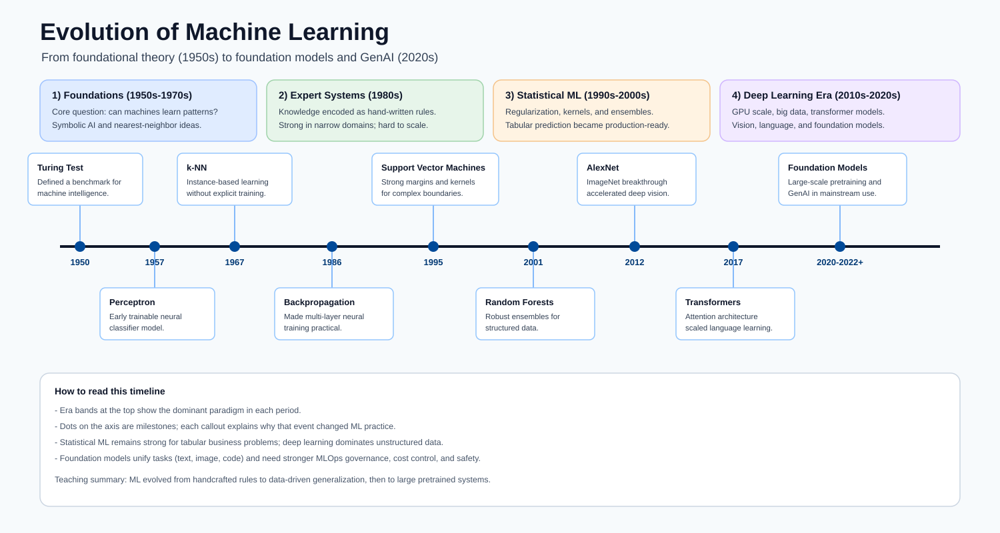

Azure Machine Learning Training Hub¶
This training hub covers Azure Machine Learning from fundamentals to production operations, with formulas, architecture, deployment guidance, and visual references.
Progression model:
- Beginner: understand AI/ML fundamentals and platform basics.
- Intermediate: build data, training, and evaluation workflows.
- Advanced: deploy, monitor, debug, and govern production ML systems.
Evolution of Machine Learning¶
Machine learning as a scientific field started in the 1950s, then moved through multiple eras based on compute power, data availability, and algorithmic advances.

Note - How to read this timeline: Each colored band is the dominant paradigm of an era, and the dots on the axis are the breakthroughs that triggered the next shift. Read it to see why modern Azure ML must support both classic ML (still best for tabular business data) and deep/foundation models (best for unstructured data) : the platform spans the whole history, not just the latest era.
Milestone eras¶
- Foundations (1950s-1970s): Turing test ideas, perceptrons, nearest-neighbor methods.
- Expert systems era (1980s): rule-based AI in enterprise workflows.
- Statistical ML era (1990s-2000s): SVMs, random forests, probabilistic modeling.
- Deep learning era (2010s): GPUs and large datasets enabled deep neural networks.
- Foundation model era (2020s+): transformers, large language models, multimodal AI.
Why this matters for Azure ML learners¶
- It explains why modern MLOps includes both classic ML and deep learning workflows.
- It clarifies when simpler models can outperform larger neural models in tabular data.
- It frames current production needs: monitoring, governance, safety, and cost control.
Learning Path¶
Math Prerequisites
Probability, linear algebra, calculus, and statistics foundations needed for all ML math.
Module 02End-to-End ML Overview
A map of the whole ML workflow and how every stage connects, from problem framing to production monitoring.
Module 03Introduction and Lifecycle
AI vs ML vs data science, AI categories, and end-to-end Azure ML lifecycle.
Module 04ML Foundations
Full ML taxonomy: supervised, unsupervised, RL, semi/self-supervised, with formulas and selection guidance.
Module 05Neural Networks and Deep Learning
Perceptron to Transformers: backpropagation, CNNs, RNNs, attention, and training at scale.
Module 06Azure ML Environment
Workspace taxonomy, compute types, model registry, and endpoints.
Module 07Environment Setup
Conda/pip setup, package validation, and runtime consistency.
Module 08Data Preparation
Data collection, cleaning, schema handling, and split strategy.
Module 09Model Types
Algorithm families with representative mathematical formulations.
Module 10Training and AutoML
AutoML search flow, compute choices, and practical training pipeline.
Module 11Performance Metrics
Classification and regression metrics, formulas, and interpretation.
Module 12Results and Explainability
Result analysis, drift detection, and explainability methods.
Module 13Deployment
Registration, scoring, endpoint deployment, and serving patterns.
Module 14Deployment Debugging
Kubernetes-focused troubleshooting for production endpoint issues.
Reference¶
Reference Home
Supporting material for implementation and operations.
Ref 02Mathematical Model Deep Dive
Formula-level explanations, objectives, assumptions, and trade-offs for core ML models.
Ref 03CLI Commands
Command-line references for setup, run, and deployment tasks.
Ref 04Glossary
Core Azure ML and MLOps terms used throughout this training.